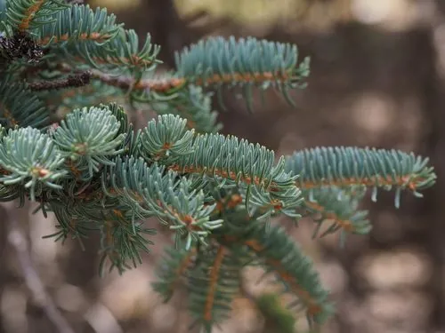

乔木 · 植物界
青海云杉 Picea crassifolia

中国青海、甘肃等地高原山地的特有云杉，耐寒耐旱，是祁连山与青海高原重要的水源涵养与用材树种。
- 分类
- 门裸子植物门纲松柏纲目松柏目科松科属云杉属
- 栖息环境
- 海拔 2000–3500 米的高寒山地，耐寒耐旱，喜冷凉气候
- 地理分布
- 中国青海、甘肃、宁夏、内蒙古等地，为中国特有树种
- 保护级别
- 暂无评估；中国未列入国家重点保护野生植物名录
物种志
青海云杉为常绿针叶乔木，高可达 25 m，树冠塔形，树皮灰褐色、呈块片状剥落；小枝有叶枕，针叶四棱状、较粗壮，长 1–2 cm，先端钝，呈灰绿色，螺旋状排列。雌雄同株，球果圆柱状，长 5–8 cm，成熟时褐色，种子具翅。
青海云杉分布于中国青海、甘肃、宁夏、内蒙古等地的祁连山、贺兰山与青海高原，是中国特有树种，喜光、耐寒、耐旱，适宜高寒山地的灰色森林土，是高原山地森林的主要建群种。木材轻软、纹理直，可供建筑、造纸与家具用；青海云杉林在涵养水源、保持水土方面作用巨大，是黄河上游与祁连山水源涵养林的核心树种。
形态与习性
- 株高可达 25 m，树冠塔形
- 针叶四棱状，长 1–2 cm，灰绿色
- 花期4–5 月，雌雄同株
- 球果成熟9–10 月，圆柱状
- 土壤高寒山地灰色森林土
- 主要用途建筑与造纸用材、水源涵养林
趣味知识
- 青海云杉耐寒耐旱，是祁连山区森林的主要建群种。
- 青海云杉林是黄河上游重要的水源涵养林，被称为“绿色水库”。
- 青海云杉的针叶四棱状、较粗壮，先端钝圆，与多数云杉不同。